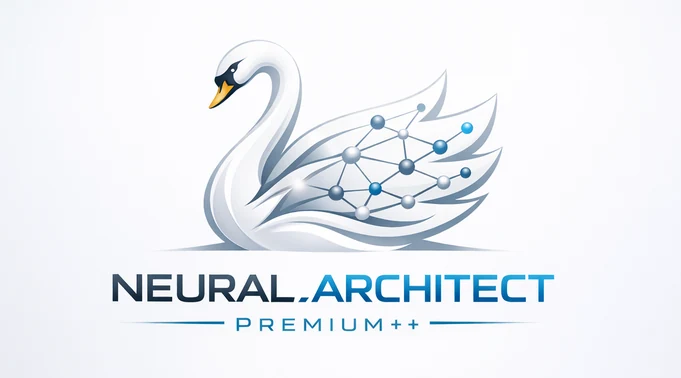

Готовые схемы для общепита и общие. Открываются как новая схема, текущая сохраняется в «Мои схемы».
Скачайте шаблон или скопируйте промпт, отдайте нейросети (ChatGPT, Claude, DeepSeek, Gemini), а ответ вставьте ниже. Принимаются JSON и Mermaid (flowchart TD …). Координаты не нужны: схема разложится сама.
✅ Вы уже используете установленное приложение.
Установленный FlowForge открывается в своём окне без адресной строки, с иконкой, и работает без интернета. Сначала один раз откройте сайт онлайн, чтобы всё загрузилось.
Если пункта нет, прокрутите нижний ряд кнопок в меню «Поделиться» до конца и откройте «Изменить действия».
Safari на Mac (macOS 14 и новее): меню «Файл» → «Добавить в Dock». Firefox на компьютере установку сайтов не поддерживает, используйте Chrome или Edge.
Щипок — зум, два пальца — поворот листа (🧭 выравнивает) · правая кнопка или долгое нажатие — быстрые действия · Alt+перетаскивание или Alt+колесо — поворот мышью · [ ] — поворот на 15° · пустое место — сдвиг · двойной тап по блоку — правка · кружок у блока — связь (в пустое место создаст новый блок) · Shift или рамка — мультивыбор · Ctrl+G — группа · Ctrl+F — поиск · Tab — новый блок после выбранного · Enter — правка текста · квадрат в углу блока — размер · кружок на выбранной линии — излом · Ctrl+Z/Y · Ctrl+C/V/D · Del · F — показать всё · V/H/C — инструменты
NEURAL_ARCHITECT_PREMIUM++ · ASV_PROD · MIT License